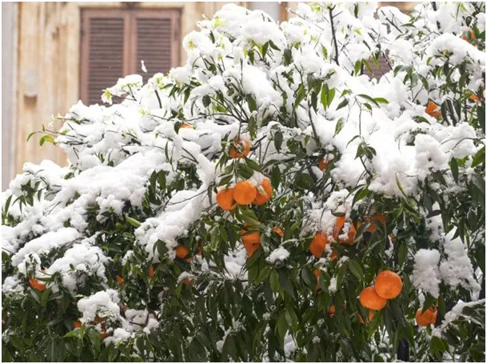
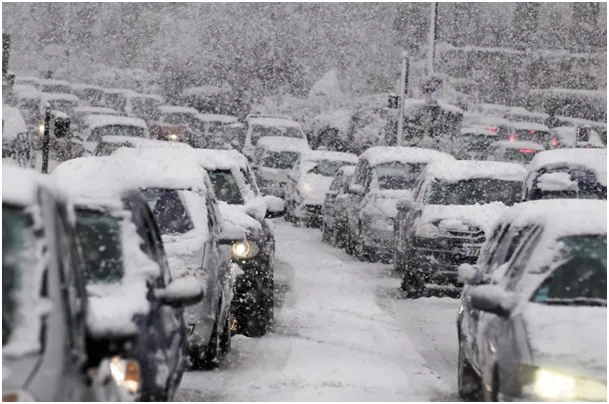
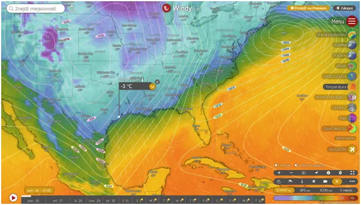

Niebiosa przemówiły.
Nie da się tego sprawdzić, to wyłącznie kwestia wiary, większość ludzi na świecie bez względu na wyznanie uważa, że Niebo wpływa na nasze życie. Dla katolików jest to kwestia doktrynalna, czyli jeśli ktoś uważa, że jest inaczej jest katolikiem bezobjawowym.
Mistycy postrzegają bożą interwencje nawet w każdym drobiazgu codzienności, większość ludzi musi np. zostać osuszonych w ciągu chwili przez wirujące Słońce jak w Fatimie w 1917, aby zadumać się nad swoją relacją ze Stwórcą.
Pogoda jest siłą poza naszą kontrolą i potrafi odebrać zbiory i życie, dlatego zawsze była w centrum wszelkich systemów religijnych. Aura jest żywiołem, o którym niewierzący fizyk powie, że jest procesem stochastycznym, czyli ładem zbudowanym z chaosu, ale to nic nie wyjaśnia, opisałem to tutaj: "Dlaczego przyszłość jest nieznana ?" https://pawelklimczewski.pl/2024/08/20/4143/

Obecnie przez oba centra cywilizacji zachodniej przechodzą potężne śnieżyce. Zachodnie wybrzeże USA i niemiecka dolina Renu to najbogatsze miejsca na świecie gdzie ludzka egzystencja toczy się w rytm rozkazów smartfonów i miliony ludzi spóźniając się do pracy przeżywa dramat egzystencjalny.

To właśnie tam przez ostatnie dekady na gruzach cywilizacji rzymskiej wylęga się animistyczna religia z kosmiczną skałą nazuwaną Gają w centrum. Zima jakiej ci ludzie nie widzieli od lat będzie miała wpływ na ich egzystencję. W Europie zniszczenie gazociągu z Azji wpędza miliony "konsumentów " w marną egzystencję wymieszaną ze strachem o jutro. W USA, w społeczeństwie bardziej zróżnicowanym, urośnie napięcie między prawą i lewą stroną i będziemy świadkami coraz ostrzejszych radykalizmów. Niestety nasze położenie w tej rozgrywce nas nie chroni, jak na dłoni dostrzegamy, że mieszkamy na pępku świata, po naszej lewej i prawej stronie wszystko wygląda inaczej a przez nasze ulice rosną mury podziałów.
Jesteśmy świadkami sceny, gdy miliony ludzi jest budzona do przytomności dosłownie przez kubeł zimnej wody z nieba na ich głowy. Nie zawsze jest to chwila, dla niektórych może to potrwać nawet kilka lat, ale jest to fascynujące.

P.s. Nad zatokę Amerykańską (Meksykańską), kolejny rok z rzędu docierają nieznane tam przed laty mrozy.
Paweł Klimczewski